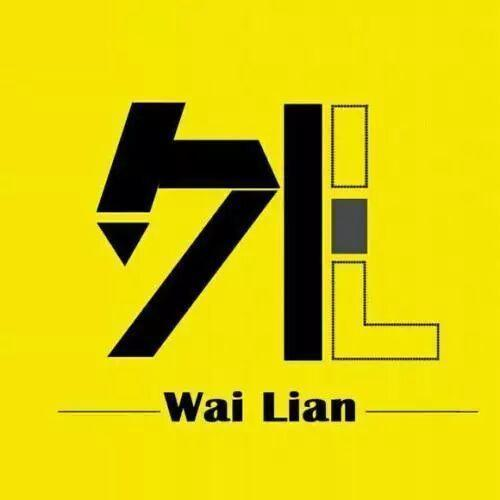
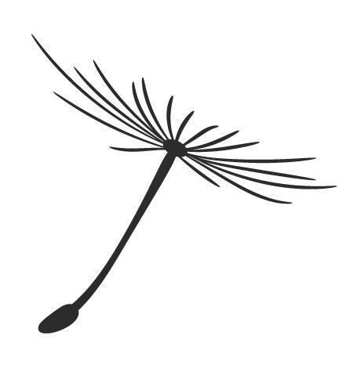
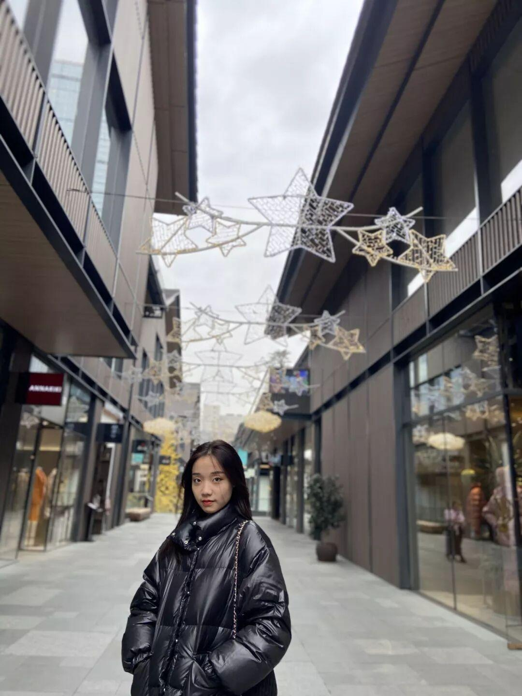
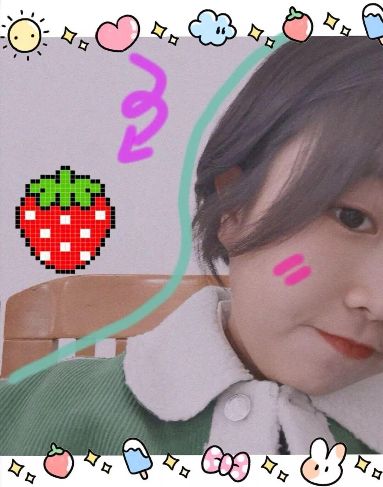
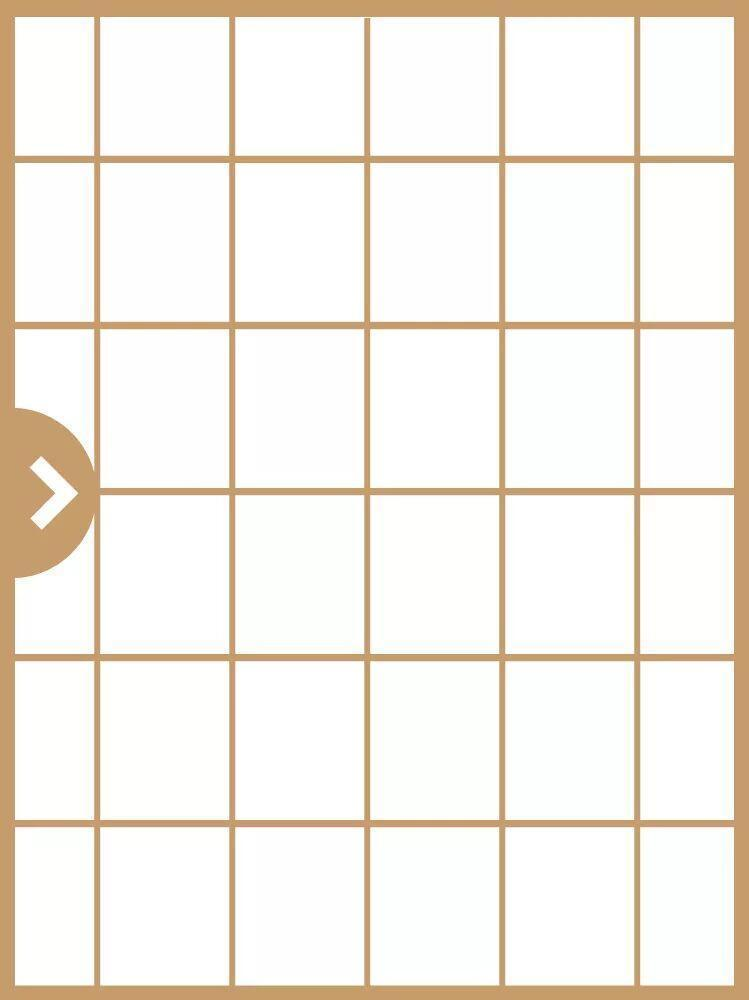
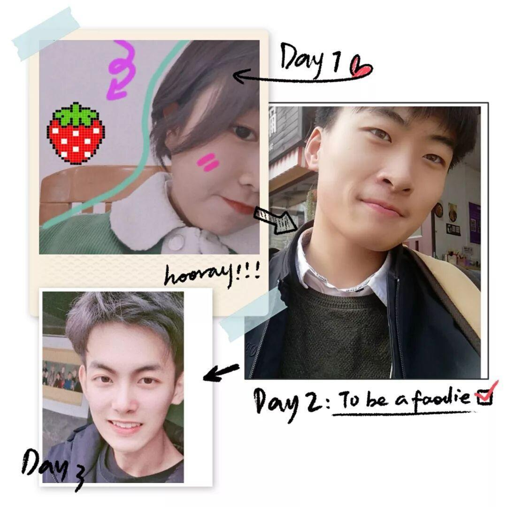

外联部--拉赞助我们是认真的！
外联部简介

外联部最主要的任务就是为社团活动筹集资金，即拉赞助，也负责与校园内的其他组织联谊活动，外联部可以锻炼人的交际能力和语言表达能力，外联部是学生接触社会、了解社会的锻炼平台，是大社会与小社会的沟通纽带。

外联部成员
高颜值的小哥哥小姐姐
18级霍英豪
超级萌大豪，花手小能手
喜欢唱跳rap滑板
希望社团可以越来越好，外联可以在社团中发挥更大的作用
然后
最重要的是单身。
屈马冲，来自河南灵宝，有着泰山崩于前而色不变,麋鹿兴于左而目不瞬的气度，与坚韧不屈勇往直前绝不退缩的意志，为人和蔼可亲，积极向上，希望能成为大家的好朋友

18物联网专业袁莹莹，没有什么特别的爱好，喜欢到处玩，作为沈阳本地人，更喜欢到处吃喝玩

hello，宝贝们好！我是19级外联部干事孙彤，是信息学院电子信息科学与技术专业的一位“三好”学生。鄙人性格十分开朗阳光，活泼好动。over 希望大家多多喜欢我呦！！！
余润东，来自湖南，在电协的一年里学到了很多，成长了很多，希望大家都能共同进步
19级董峻昊，哔哔哔，电波到达，请接收…本人小萌新一枚，很荣幸能为电协添砖加瓦，奋献自己的力量，也希望在电协能够学到更多的东西，希望电协越来越好，无悔青春，无悔电协！！
19级萌新于芷川
辽宁本溪的双鱼男
来自信息科学与工程
性格开朗阳光 ，积极向上
喜欢旅游，打王者（钟爱）很高兴进入外联部，希望能在外联和哥哥姐姐好好玩耍



左右都可以滑动打开心扉
编辑：刘兆唯


继续滑动看下一个